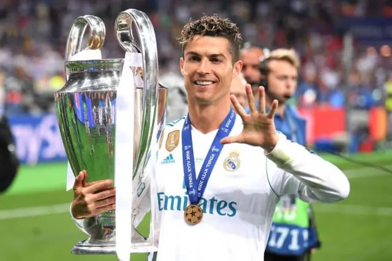
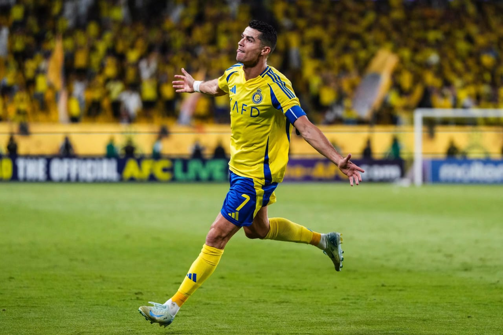
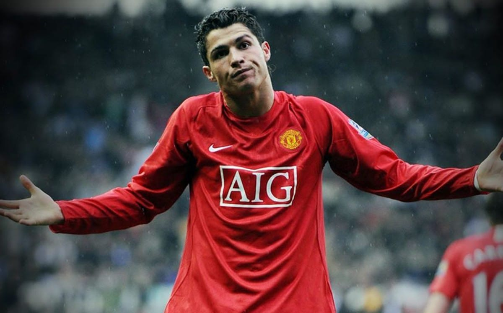
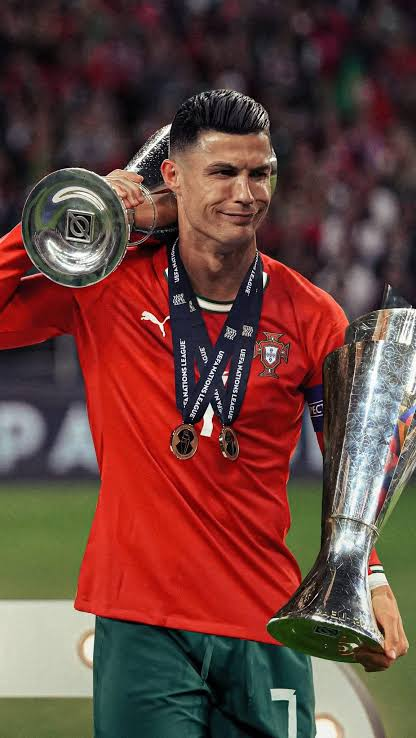

 CRISTIANO RONALDO 
 "El Bicho" - Una Carrera de Éxito 
Cristiano Ronaldo dos Santos Aveiro, conocido mundialmente como CR7, es un futbolista portugués ampliamente considerado uno de los mejores jugadores de todos los tiempos. Su dedicación, ética de trabajo y capacidad goleadora son legendarias.
Ha ganado múltiples *Balones de Oro* y *Ligas de Campeones de la UEFA*.
"Soy el mejor del mundo."
— Atribuido a Cristiano Ronaldo
Su impacto trasciende el campo de juego, siendo una de las figuras más influyentes del deporte global.